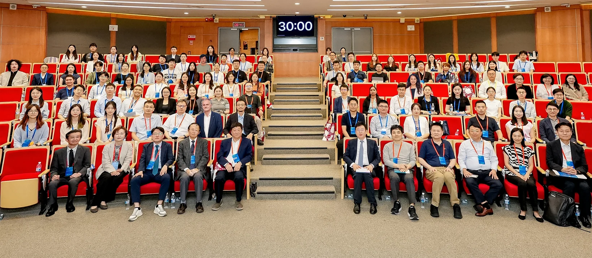

MEETING ARCHIVE
11th Scientific Meeting
Singapore 2026
11–14 June 2026
National University of Singapore
Innovation, Precision, Collaboration: Shaping the Future of Vascular Biology

- Invited main-session talks
- 31
- Young investigator talks
- 9
- Posters presented
- 45
MEETING REPORT
Meeting report
At the National University of Singapore, researchers explored how changes in the endothelium, vessel wall and metabolic environment contribute to vascular disease.
ASVB convened the meeting, hosted by the National University of Singapore with Southern University of Science and Technology as co-organizer. The main sessions took place in the MD11 Auditorium.
Memorial lecture
Nanping Wang delivered the Paul M. Vanhoutte Memorial Lecture, honouring the scientist whose work shaped modern vascular biology.
Young Scholar Forum
Early-career researchers presented disease models, experimental approaches and translational work in a dedicated oral forum. Poster sessions continued the discussions between lectures.
Exchange across Asia
Speakers included representatives of the Japanese and Korean vascular biology and medicine societies. Around 200 participants gathered across two meeting venues.
Download the pre-meeting programmePDF